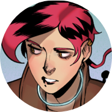
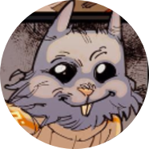
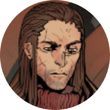
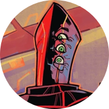
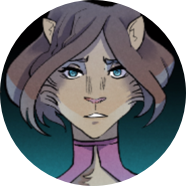
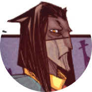

Метеора
Известная космическая контрабандистка. Родилась и жила на Земле, пока отец не утащил её с собой в космос, а сам пропал с горизонта. Сначала делает, потом думает, но ловко выкручивается из любых проблем. В свободное от работы время собирает вещи с Земли и отчаянно пытается вернуться домой.

Пуш
«Танк» команды Метеоры. Гаальский принц, наследник трона, вынужденный покинуть родную планету после дворцового переворота. Спокойный и рассудительный, готов как поддержать товарищей, так и вправить им мозги. Именно он научил Ору управлять кораблем.

Тео
Капитан корабля «Аномалия», конкурент и эпизодический союзник Метеоры. Родная планета Веил отвергла его, лишив маски и кланового имени за совершенные преступления. Но Метеора дала ему новое, пообещав, что его примет Земля.

Зигги
Техник, изобретатель, интеллектуальный центр команды Метеоры и верный друг. Впрочем, иногда его положительные качества отходят на второй план — когда в нем включается азарт игрока или неуемное любопытство. Может менять внешность, используя чужую ДНК.

Феникс
Охотник за головами, землянин, отец Метеоры. Прожил больше пяти человеческих жизней, не постарев, отлично стреляет, быстро бегает и исчезает без следа. Приложил руку к глобальному политическому расколу космоса и вечной ненависти Заба Неру к дикарям с Земли.

Заб Неру
Военный комиссар Коалиции, следит за порядком в космосе и готов на крайние меры для устранения того, что порядку угрожает. Принадлежит к одной из наиболее развитых рас, мито, и представляет собой разумный антропоморфный гриб в стильной форме и на каблуках. Жесткий, непримиримый враг, который никогда ничего не забывает.

Мири
Бывшая возлюбленная Пуша, нынешняя супруга Дургала, временная фаворитка лиримского короля. Решительная роковая женщина, не забывающая о принципах и готовая рисковать. С такими мужчинами в личной жизни к риску вообще нужно быть готовой всегда.

Дургал
Избалованный лиримский аристократ, давний противник Пуша. Его отец организовал дворцовый переворот, но в итоге Дургалу это не принесло ничего хорошего, лишь распятие и тюрьму за провинности перед новым королем. Говорят, он потерял рассудок от пыток. Что ж, значит, это сердце позволило ему в ключевой момент объединиться с Пушем, чтобы вместе сбежать из тюрьмы.

Шебу Предвечный
Древний бог. Рассказал Метеоре, что именно он когда-то забросил на Землю крупицы жизни. Имеет форму пирамиды и говорит стихами. Загадочный, но явно очень могущественный.